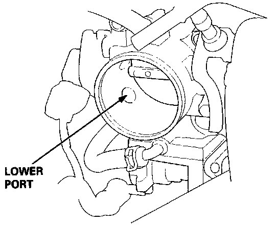
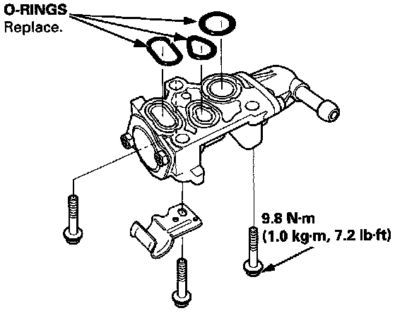

Auxiliary Air Valve (Idle Speed): Testing and Inspection
NOTE: The fast idle thermo valve is factory adjusted; it should not be disassembled.1. Remove the intake air duct from the throttle body.
2. Start the engine.


3. Put your finger over the lower port in throttle body and make sure that there is air flow with the engine cold (engine coolant temperature below 86°F, 30°C).
- If not, replace the fast idle thermo valve and retest.
4. Start the engine. Hold the engine at 3,000 rpm with no load (A/T in (N) or (P) position) until the radiator fan comes on, then let it idle.
5. Check that valve is completely closed. If not, air suction can be felt at the lower port in the throttle body.
- If any suction is felt, the valve is leaking. Check engine coolant level and for air in the engine coolant system. If OK, replace the fast idle thermo valve and recheck.